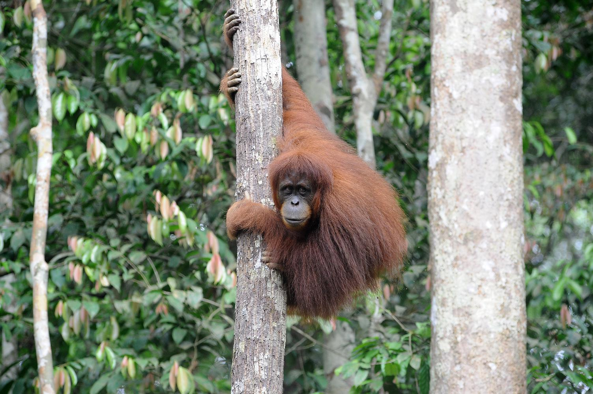

Endangered Animals
5 animals that are almost extinct in Indonesia
Orangutan

There are at least three types of endemic Indonesian orangutans, namely the Sumatran orangutan, the Kalimantan orangutan, and the Tapanuli orangutan. Its own characteristics are reddish-brown fur and orangutans from Kalimantan have large faces with temples resembling pillows. Meanwhile, the Tapanuli orangutan is a new species and was found in the Batang Toru Ecosystem. This species is threatened with extinction and its condition is very concerning. The population of orangutans according to BPS data in 2017 was only 1,890 individuals. Even in 2015 the population was at 143 individuals.
Orang Utan (ANTARA FOTO/Wahdi Septiawan)
Sumatran Tiger

This animal has a special characteristic, namely dark skin with dark black stripes. The pattern when viewed closely is similar to a human fingerprint. the population of this animal in 2015 was 58 individuals, in 2016 there were 71 individuals, and in 2017 the remaining 68 individuals. Sumatran tigers are also included in the category of protected animals based on Law Number 5 Thaun 1990. Sumatran tiger scarcity is due to the large number of hunting and illegal trade.
Harimau Sumatera (ANTARA FOTO/Wahdi Septiawan/aww.)
Sumatran Elephant

The Sumatran elephant population in 2017 was 362. This figure is higher than in 2015 and 2016 which were only 84 and 115 individuals. Many factors trigger the scarcity of this large animal population. According to an explanation in the Journal of Biotic 6(1), poaching is the main factor. Meanwhile, other factors such as death from poison and the installation of electric currents in plant cultivation areas have also caused the population of these animals to decrease. Sumatran elephants have a characteristic weight of about 3 to 5 tons with a height of approximately 2-3 meters. This elephant's skin is lighter than other Asian elephants with reddish-white ears.
Gajah Sumatera (ANTARA FOTO/Rony Muharrman/rwa.)
Komodo

Komodo is a rare and endemic animal that can be found on Komodo Island, East Nusa Tenggara. According to BPS, the population of Komodo dragons in 2017 was 5,964. The threat of extinction is caused by human activities such as hunting, expansion of settlements, to the construction of tourist attractions.
Komodo (ANTARA FOTO/HENDRA NURDIYANSYAH)
Maleo

Maleo or Macrocephalon maleo is an endemic animal to Sulawesi. This bird has a habitat in hot sandy beaches or mountains that have hot springs. The maleo population recorded at the BPS in 2017 was only 1,204 individuals. Indonesia.go.id, said that the theft of bird eggs threatens the sustainability of the population.